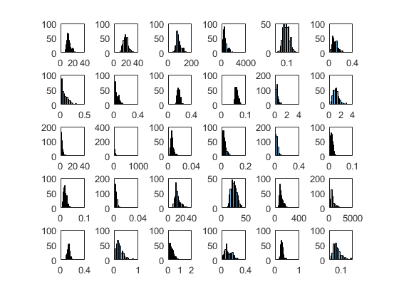
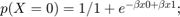
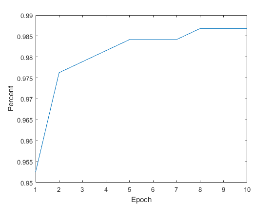
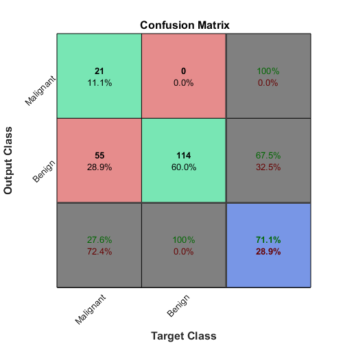

Logistic Regression applied to Breast Cancer Wisconsin (Diagnostic) Data
We will use a logistic regression algorithm to train a model to be able to predict whether cells from a fine needle aspirate sample are derived from a malignant or benign tumor. We will use a training data set obtained from UCI Machine Learning Repository titled Breast Cancer Wisconsin (Diagnostic) Data Set (BCWD). The data is a collection of 30 predictors and a binary response variable describing the fine needle aspirate sample as being associated with a benign (B) or malignant (M) lesion.
Contents
Import Breast Cancer Wisconsin (diagnostic) data set
First we will import data from the UCI Machine Learning repository to a table variable, BCWD.
path = websave('BCWD.txt', 'http://archive.ics.uci.edu/ml/machine-learning-databases/breast-cancer-wisconsin/wdbc.data'); filename = path; delimiter = ','; formatSpec = '%f%C%f%f%f%f%f%f%f%f%f%f%f%f%f%f%f%f%f%f%f%f%f%f%f%f%f%f%f%f%f%f%[^\n\r]'; fileID = fopen(filename,'r'); dataArray = textscan(fileID, formatSpec, 'Delimiter', delimiter, 'TextType', 'string', 'ReturnOnError', false); fclose(fileID); BCWD = table(dataArray{1:end-1}, 'VariableNames', {'VarName1','M','VarName3','VarName4','VarName5','VarName6','VarName7','VarName8','VarName9','VarName10','VarName11','VarName12','VarName13','VarName14','VarName15','VarName16','VarName17','VarName18','VarName19','VarName20','VarName21','VarName22','VarName23','VarName24','VarName25','VarName26','VarName27','VarName28','VarName29','VarName30','VarName31','VarName32'}); clearvars filename delimiter formatSpec fileID dataArray ans;
Organize our data
The imported data is a 569x32 matrix. The second column contains our response variable which defines the sample as benign (B) or malignant (M). We will binarize our response variables as well as create seperate training and test data sets.
labels = BCWD(:,2); % We will create seperate matrix containing predictor variable by deleting % the response variabls (labels) as well as the first column which is an ID number for the sample BCWD(:,1:2) = []; bc = table2array(BCWD); % Let's take every 3rd row an make it part of our test data. The other % 2/3rds of the data will be used to train our model. test = bc(1:3:end, :); idx = ismember(bc, test, 'rows'); train = bc(~idx, :); testlabels = labels(idx, 1); trainlabels = labels(~idx, 1); % 'M' will be equal to 1 and 'B' will be equal to 0. testlabels = testlabels{:, 1} == 'M'; trainlabels = trainlabels{:, 1} == 'M';
Evaluate the distribution of each attribute
we can apply transformations at a later time to create a guasian distribution to specific variables and potentially improve our predictive model
for i = 1:size(train, 2) ax(i) = subplot(floor(sqrt(size(train, 2))),ceil(sqrt(size(train, 2))),i); h(i) = histogram(train(:, i), 20); hold on end
Standardize data
We will standardize our data (mean = 0, stdev = 1) to satify an assumption for our logistic model that there is equal variance across attributes.
train = zscore(train); test = zscore(test);
Use the LogisticRegressionModelFcn to create model coefficient to fit our training data
 We will use the LogisticRegressionModelFcn provided here to train our model. We will set our alpha value to 0.3 and iterate throuh our data 10 times initially. These values can be changed on successive training attempts to improve the accuracy of our model.
[beta, accuracy] = LogisticRegressionModelFcn(train, trainlabels, 0.3, 10);
Plot a confusion matrix
The y-axis(Output Class) represents predicted classes. While the x-axis (Target Class) represents the true classes for the test data. The diagonal squares show the number of correctly predicted observations while the off diagonal squares illustrate incorrect classifications. The For the current model 21 (11.1%) of samples were correctly identified as malignant and 114 (60.0%) were correctly identified as benign. This corresponds to 71.1% accuracy of our model for the test data. 55 (28.9%) malignant samples were incorrectly classified as benign with only 27.6% malignant samples being correctly identified. Unfortunately our model is not very sensitive given that a number of malignancies are overlooked.
prediction = logisticRegressionPredict(beta, test); correctlyIdentified = sum(all(prediction == testlabels, 2)); accuracy = correctlyIdentified/length(testlabels); % Make confusion matrix testlabels = [testlabels'; ~testlabels']; prediction = [prediction'; ~prediction']; figure; plotconfusion(testlabels, prediction) set(gca, 'xticklabel', {'Malignant', 'Benign', ''}) xtickangle(45) set(gca, 'yticklabel', {'Malignant', 'Benign', ''}) ytickangle(45) % Plot a ROC curve to see how well we have done
Creating a better logistic regression model
There are several ways that we can begin to tweak our model to increase its sentivity. Getting ~100% accuracy on our training data likely won't take much effort. We can increase the the number of epochs that we iterate through the training data and make corrections to our coeffiecients to better fit our model to the data alter the correction coefficient. However, the objective is to create a model that will apply to various test sets rather then overfitting our model Some feature engineering is required. We can begin to look more closely at our data and isolate particular predictors that may be more effectively used to create a model than all predicotrs combined.